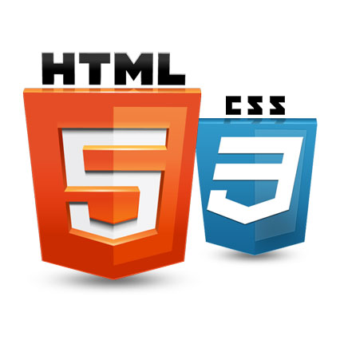

Napredni kursevi informatike
HTML je, pojednostavljeno reèeno, jezik koji omoguæava razlièitm kompjuterima da komuniciraju jedni s drugima. Pod razlièitm se sugeriše da kompjuteri mogu pripadat razlièitm mrežama, mogu se nalazit u razlièitm zemljama, podržavat drugaèije platorme, operatvne sisteme, te mogu bit desktop, mobilni aparat, tablet, itd. HTML je za sve ove kompjutere zajednièki jezik komunikacije. HTML kratca je izvedena od Hypertext Markup Language, što znaèi prezentacijski jezik za izradu web-stranica. Hypertext (Hipertekst) se odnosi na sposobnost stvaranja linkova ka drugim stranicama i drugim web-resursima.
Joomla! je CMS sustav za upravljanje web sadržajem otvorenog koda ("open source") koji služi objavljivanju sadržaja na World Wide Webu i intranetu. Pisan je u PHPu a za spremanje podataka koristi bazu podataka MySQL. Joomla dolazi s opcijama za upravljanje tekstom i slikama, prikaz sadržaja u RSSu, PDFu i verziji za printanje, raznim modulima kao što su "posljednje novosti" i "popularni sadržaji", upravljanje banerima i anketama, tražilicom i kontakt formom. Osim navedenih opcija dostupne su tisuæe specijaliziranih dodataka koji mogu Joomla! site pretvoriti npr. web duæan, multimedijalnu galeriju ili on-line zajednicu.

WordPress je open source Content Management System (CMS), èesto se koristi kao aplikacija za objavljivanje bloga, poduprt PHP-om i MySQL-om. Wordpress ima mnoge znaèajke, ukljuèujuæi plug-in arhitekturu i sustav predložaka. Wordpress se koristi na više od 13% od 1.000.000 najveæih web stranica, WordPress je najpopularniji CMS u upotrebi danas. wordpress je prvi put objavljen 27. svibnja 2003. Objavio ga je Matt Mullenweg. Od kolovoza 2010, verzija 3.0 je preuzeta više od 12,5 milijuna puta.